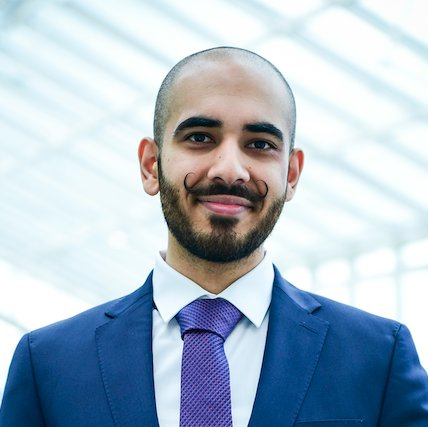

M.Sc. BIPM · HWR Berlin · Winter term 2026/27
From the lab bench to the backlog, and now to the data.
Hi, I’m Arslan. I work as a Product Owner in Berlin, and this October I started the master’s in Business Intelligence & Process Management at HWR Berlin. This page is the story of how I got here.

- Today
- Product Owner at Scheer IMC
- Studying
- M.Sc. BIPM at HWR Berlin
- Studied
- Teacher training in Biology & Chemistry at FU Berlin, Business Administration at HTW Berlin
- Speaks
- German, English, Urdu/Hindi
My path
Six years of teacher training, then a change of course
I started out wanting to teach. From 2014 to 2020 I studied biology and chemistry at Freie Universität Berlin to become a teacher, and worked in labs along the way. What I took from those years is a habit: keep learning new things myself. For a teacher that’s a must, and it has stayed one for me.
Over time I noticed that I cared less about what happens inside a cell than about how organisations decide what to build, and why. So in 2020 I changed course and enrolled in business administration at HTW Berlin. A year later I started working alongside my studies, as a product marketing consultant at the content agency Suxeedo, where every campaign was judged by its numbers.
That’s where product work caught me. In 2022 I joined PwC as a Product Owner and took a Workday add-on from concept to release. Since 2024 I’ve been a Product Owner at Scheer IMC, the company behind the IMC Learning Suite, a learning platform for large organisations. I work there remotely and I’m responsible for several product areas: dashboards, apps, generative AI and third-party integrations. Along the way I became a Certified Scrum Product Owner.
Which brings me to HWR. As a Product Owner, most of my decisions should rest on data, and too often I depend on someone else to pull it, model it or explain it. BIPM is how I want to close that gap: do the analysis myself in Python and SQL, and understand the processes behind the numbers. It’s the same habit I picked up in teacher training: keep learning new things myself.
The path at a glance
Twelve years, three universities, three employers
Study and work, year by year. The two first overlapped in 2021, when I started working during my bachelor’s.
On the map
Every stop fits inside Berlin
My path has covered more ground between subjects than between places: the two stops farthest apart are only 16 km from each other. Select a stop to find it on the map.
Built in Python with folium and OpenStreetMap data, no API key needed. Source: myJourney.ipynb
Outside work
Away from the backlog
Since 2025 I’ve volunteered in the children’s library at the Kurt-Tucholsky-Bibliothek in Berlin.